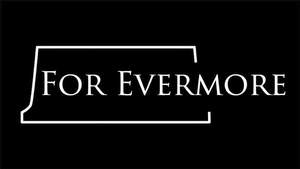

Trade Mark Journal No.2025/013 28 March 2025
UK00004171529 10 March 2025 (6,9,11,14,16,19,38,41,42,43,45)

- Class 6
- Monuments and memorials of non-precious metals.
- Class 9
- Software; application software; software for research purposes and sharing information relating to wars, war history, the war dead, people involved in war; software for the location and identification of the war dead; databases; podcasts; downloadable publications; musical recordings; musical sound recordings; musical video recordings; audio recordings; audiovisual recordings.
- Class 11
- Lighting and lighting reflectors; torches for lighting; flaming torches; commemorative torches for lighting; commemorative flaming torches. .
- Class 14
- Metal badges for wear; keyrings and keychains and charms therefor, wristbands [charity]; jewellery; commemorative coins; ornaments.
- Class 16
- Stationery; educational supplies; printed matter; books; periodicals; magazines; paper and cardboard; notepads; pens; pencils; cards; gift cards; greetings cards; postcards; birthday cards; cardboard badges; paper badges; coasters of paper or cardboard; printed music; music books; books of poetry; printed literature.
- Class 19
- Monuments and memorials not of metal; monuments and memorials of concrete, stone and marble.
- Class 38
- Providing access to computer databases; providing access to computer databases relating to wars, war history, the war dead and people involved in war.
- Class 41
- Education; training; publishing and reporting services; education and instruction services in relation to wars, war history and the war dead; provision of education and entertainment via podcasts; providing online electronic publications; providing online electronic publications relating to war, war history and the war dead; publication of material which can be accessed from databases or the internet; provision of archive library services; production of videos; production of musical videos; production of promotional videos.
- Class 42
- IT consultancy, advisory and information services; software as a service [SaaS] for research purposes relating to wars, war history, the war dead and people involved in war; software as a service [SaaS] for the sharing and dissemination of information relating to wars, war history, the war dead and people involved in war; software as a service [SaaS] for the location and identification of the war dead; advisory and consultancy services relating to all the aforesaid services.
- Class 43
- Provision of food and drink; restaurant services; café services. .
- Class 45
- Licensing of software and databases; licensing of software and databases relating to genealogy, history or ancestry, war, war history and the war dead.
Commonwealth War Graves Commission
Representative: J P Mitchell Solicitors